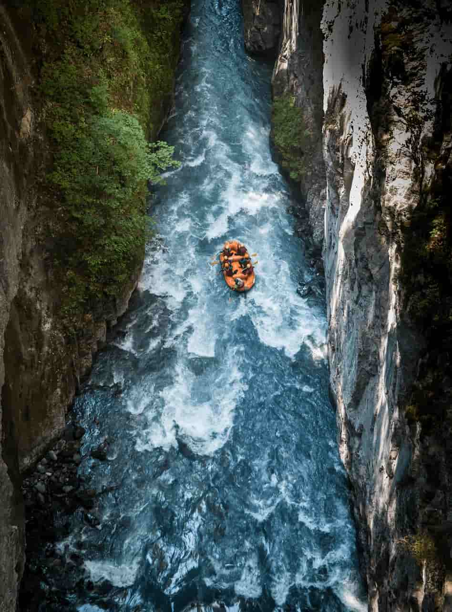

Rafting em Família
Uma experiência para aproveitar a natureza em grupo, com orientação dos nossos instrutores.
Duração: 2 horas
Nível: Iniciante
Escolha sua próxima aventura e descubra a emoção de explorar os rios em contato com a natureza. Temos opções para quem está começando e para quem procura mais adrenalina.
Uma experiência para aproveitar a natureza em grupo, com orientação dos nossos instrutores.
Duração: 2 horas
Nível: Iniciante

Um passeio emocionante para quem deseja experimentar corredeiras e desafios com acompanhamento profissional.
Duração: 3 horas
Nível: Intermediário

Explore paisagens naturais e aproveite um percurso cercado por montanhas e vegetação.
Duração: 4 horas
Nível: Avançado
| Passeio | Duração | Nível | Indicação |
|---|---|---|---|
| Rafting em Família | 2 horas | Iniciante | Quem está começando |
| Aventura nas Corredeiras | 3 horas | Intermediário | Quem busca adrenalina |
| Rafting nas Montanhas | 4 horas | Avançado | Quem busca desafios |
Entre em contato com nossa equipe para tirar dúvidas e obter informações sobre reservas.
Fale Conosco